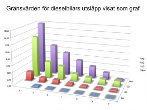

Som jag redan berättat lämnade jag tidigare i år in ett medborgarförslag till min hemkommun, Töreboda. Det handlar om att avsluta allt arbete och al åtgärder som motiveras utifrån tanken om klimathot med ursprung i mänsklig verksamhet. Förslaget såg ut som nedan. I måndags, 30 november, samtidigt som världens ledare samlades i Paris för att med läpparna bekänna sig till klimatkyrkan fick jag möjlighet att försvara mitt förlag inför kommunfullmäktige. Det redovisas längre ner.
Medborgarförslaget
- Det är dags att kommunen avvecklar alla aktiviteter som motiveras med klimathot.
- Friställ alla som avlönade med kommunala skattepengar traderar myten om klimathotet. Slimma organisationen.
- Gör en översyn av alla kommunala beslut där myten om klimatet varit en del av beslutsunderlaget.
- Återställ samtliga beslut till en klimathotsfri ordning.
Motivering till förslaget (inlämnad samtidigt med förslaget)
Det finns inget människoskapat klimathot. Koldioxid är livets gas, inte ett gift eller en förorening.
Trots drygt ett kvartssekel med FNs politiska uppdrag att specifikt leta efter bevis för att människans utsläpp av CO2 innebär en påtaglig risk för en katastrofal klimatutveckling har vetenskapen inte kunnat påvisa att det ens påverkar klimatet, än mindre innebär någon risk.
De senaste 18 åren finns ingen uppvärmning noterad som med vetenskaplig signifikans avviker från medelvärdet. Samtliga modeller som varslar om stigande temperaturer och hotande utveckling har visats vara felaktiga. De kan därför inte användas som beslutsunderlag.
Allt fler vetenskapliga fakta från olika discipliner pekar istället på att den mycket svaga temperaturökning som noterats under hundra år fram till 1998 är en återhämtning från de kalla seklen tidigare. Vi börjar också förstå sambanden mellan solfläckar på vår sol, variationer i kosmisk strålning när vårt solsystem passerar genom spiralarmar i Vintergatan samt molnbildning och temperatur på Jorden.
Den svagt ökande koldioxidhalten i atmosfären har varit välgörande för växtligheten, skördarna i odlade grödor har ökat och öknarna har minskat.
Avslag
Kommunstyrelsen avslog förslaget, med hänvisning till att Töreboda kommun antagit en Hållbarhetspolicy.
I Kommunfullmäktige
Jag hade innan mötet försäkrat mig om möjligheten visa en powerpoint och berätta. Det är den som kommer här. Exakt vad jag sa kan jag inte återge, eftersom jag talade utan manus till bilderna. Men det mesta torde vara uppenbart för den som intresserat sig för klimatfrågan. Jag vill redan här framföra min ursäkt till de människor vars bilder jag utan att fråga om lov lånat för presentationen.
Om någon bild är svårtydd, klicka på den så förstoras den.


Kommen så här långt avbröts jag av fullmäktiges ordförande som tyckte att min tid var ute. Tio minuter hade enligt hans räkning passerat och mer än så kunde inte ägnas åt denna fråga, som kommunstyrelsen redan förordat avslag på.
En vänsterpartist försökte med några frågor få mig att se okunnig ut. Samtidigt som ordförande upprepade att min tid var ute. I mina ögon lyckades inte vänsterpartisten med sitt uppsåt.
Ni får dock se fortsättningen, som inte KFs ledamöter fick se. Här bifogar jag korta kommentarer om vad jag kunde ha sagt till bilderna.
Kurvan visar hur isotopen (kol) C14 tas upp i naturen efter atombombsproven i atmosfären runt 1960. Halten halveras på tio år. Det finns anledning att anta att den vanliga isotopen C12 som normalt ingår i CO2 tas upp på samma sätt.
Dessa svenska forskare tillfrågas inte av vare sig politiker eller MSM om sina rön och kunskaper om faktorer som påverkar klimatet. Jag har tidigare skrivit om hur Bengtsson mobbats av kollegor. Mörner bidrog till en artikel i en vetenskaplig tidskrift med inriktning mot klimatet. Den publicerades, men eftersom den inte larmade om klimathotet blev kollegor upprörda och resultatet blev att tidskriften lades ner.
Den undre grafen visar hur paleogeologer bedömer att Jordens klimat varit de senaste 1100 åren. Den är inte exakt eftersom man utgår från proxydata.
Den övre visar Michael Manns manipulering för att visa på en katastrofal uppvärmning, också känd som ”hockeyklubban”. Den har flera gånger och på flera sätt visats vara ett falsarium. Det pågår en rättsprocess där Mann stämt journalisten Mark Steyn för att han kallat Mann för en bedragare. Steyn har stämt Mann för att han vägrar lämna ut sina rådata för att visa att han inte fuskat. Manns universitet vägrar stötta honom.
Sett från Solen är alltid hela Jorden belyst, har dag. Bilden är dock inte helt korrekt. I det ekvatoriala området där termostatkonvektionen är vertikal borde det visa vitt från mitten och högerut. Som alla som besökt tropikerna vet är det sol på morgonen, mulnar till vid lunch och regnar på eftermiddagen för att klarna upp lagom till att Solen störtar mot horisonten.
Mönster som går igen.
‘
Det är fläckarna på Solens yta, störningar i dess magnetfält, som ger ökad solvind.
Från Mörners senaste rapport som kom ut i oktober i år. Vid ökad solaktivitet ökar solvinden och verkar som en magnetbroms på Jordens rotation. Detta gör det möjligt för golfströmmen att nå längre norrut. Klimatet blir varmare.
Vid låg solaktivitet roterar Jorden något snabbare och Golfströmmen når inte lika långt norrut. Klimatet blir kallare. Solen (och vi) är på väg in i detta läge nu, från att tidigare haft hög aktivitet.
Också från Mörners rapport. Korrelationen mellan solaktivitet och historiskt klimat.

Notera att koldioxid inte finns med. Det är ingen förorening och kan inte minskas med reningsutrustning. Enligt ekvationen för fotosyntesen som redovisats tidigare så är mängden koldioxid direkt (gram för gram, molekyl för molekyl) relaterad till mängden förbränt bränsle.
Pyramiderna i Giza, Egypten, Afrika
Macchu Picchu, Peru, Sydamerika

Kinesiska muren, Kina, Asien
Angkor Vat, Kambodja, Sydostasien

Uppsala Högar, Uppsala, Sverige, Europa
Nämforsen, Ångermanälven, Sverige, Europa
Hatra, Nineve, Irak, Mellanöstern. 2000 år gamla romerska lämningar. Dessa finns inte kvar. De har smulats till grus av Islamiska staten, som inte vill se spår av några andra civilisationer än sin egen.
Den oförsonliga klimatalarmismen har mer gemensamt med IS än med tiotusen år av civilisationshistoria.
Som avslutning, med sista bilden kvar på skärmen hade jag tänkt berätta följande.
Konsekvenser av klimatpolitik
Det är i år 1690 år sedan de kristna biskoparna vid konciliet i Nicea enades om hur man skulle beskriva Guds väsen. Än i denna dag är det ingen som vet om de fick det rätt. Gud har inte framträtt och avslöjat sanningen. Det riskerar att bli på samma sätt med klimathotet via koldioxiden. Det finns bara teorier och modeller, men man har inte lyckats visa att de stämmer.
På många sätt kan det vara viktigare och mer framgångsrikt att beskriva vad som blir konsekvenserna av att bedriva politik mot det påstådda klimathotet. Det gäller i synnerhet som inga, och då menar jag verkligen att inga som i inga alls, fakta idag stöder hypotesen att vi med politiska styråtgärder kan påverka klimatutvecklingen. Denna brist på vetenskapligt stöd för klimatpolitik ser i allt väsentligt likadan ut oavsett vi föreställer oss klimatförändringar orsakade av våra utsläpp eller av naturliga orsaker.
Anledningen till att det saknas faktastöd för klimatpolitik är att våra utsläpp utgör kanske (högt räknat) 3% av planetens totala omsättning av koldioxid. Dessa 3% är därmed mindre än den naturliga variationen över några decennier, ibland till och med enskilda år. Ett enda större vulkanutbrott överträffar våra utsläpp under ett helt år, men naturen kan hantera det, om än med viss fördröjning.
Så konsekvensen av klimatpolitik blir en väldigt liten, faktiskt försumbar, påverkan på klimatet. Påverkan blir så liten att av ekonomiska skäl är det bättre att helt avstå från klimatpolitik. Vill ni diskutera klimatvetenskap, kan vi göra det. Men då skulle jag behöva väsentligt mer tid för att förklara hur och varför några stora organisationer medvetet ljuger om klimathotet, ljuger om det vetenskapliga läget. Jag vill bara som exempel anföra att IPCC i sin senaste rapport, som kom 2014, i sin summering för beslutsfattare skriver att det är bråttom med åtgärder för att rädda Jorden. Men i den omfattande texten av rapporten, där de redovisar forskningsläget konstaterar de att de inte har en susning om varför forskningen inte bekräftar deras modeller och förutsägelser. I klartext har forskningen inte gett den kunskap som de i summeringen påstår kräver åtgärder.
De andra konsekvenserna av klimatpolitik har däremot potential att bli betydligt mer påtagliga. Några av de uppenbara är att de pengar som används för klimatpolitik hade kunnat användas med större nytta till andra saker. Skola, vård, omsorg, fattigdomsbekämpning, vägar och infrastruktur med mera, är saker som politikerna ständigt säger sig ha för lite pengar till.
Andra konsekvenser är att utvecklingen går långsammare än annars, därför att resurser läggs på att stoppa klimatförändringarna. Mest påtagligt är nog den ökade byråkratin och de kontraproduktiva reglerna. Regler som till ingen nytta hindrar medborgare och företag att göra det som passar dem bäst.
Konsekvensen av klimathotsforskning som inriktar sig på att leta pengar till forskning istället för att leta insikt och sanningar om verklighetens beskaffenhet, är sämre kunskap. Tid och energi läggs på fel saker, av fel anledningar. Sämre kunskap leder till sämre utveckling.
Konsekvensen av försämrad utveckling är sänkt välståndsutveckling. En sänkt väståndsutveckling ger ett sämre beskattningsunderlag. Ett sämre skatteunderlag ger mindre marginaler att kompensera andra negativa utfall. Vilket drabbar samhällets svaga först och hårdast.
Konsekvensen av tvingande klimhotsarbete är mindre frihet, fler lagar, mer regleringar och inte minst större överföring av makt och pengar till det fåtal personer och organisationer som passar in i klimathotsprofilen och kan sko sig på den. Vilket ger sämre lokalt inflytande på den egna situationen, mindre egenmakt för både medborgare och kommuner.
Konsekvensen av klimathotspolitik är ett sämre samhälle. Vi skulle klara framtidens utmaningar mycket bättre utan klimathotspolitik. Det gäller i synnerhet årsmånsvariationer, sådana naturliga svängningar i väder och förändringar i klimat som vi inte kan förutse, trots att vi vet att de förekommer.
Men utan klimathotspolitik är vi rustade med kunskap, pengar och andra resurser att vidta nödvändiga åtgärder för att vidmakthålla ett fungerande samhälle efter de krav och behov som uppstår.
Det är därför vi inte ska bedriva klimathotspolitik! Det är därför det är synnerligen bortkastat att bedriva klimathotspolitik på kommunal nivå!
Jag vet att ni här i Töreboda har antagit en Hållbarhetspolicy. Jag hoppas att ni är medvetna om att ni därmed bidragit till att lägga en onödig boja på utvecklingen i kommunen. Ni tillåter därmed att utvecklingen här kommer att hejdas av beslut tagna långt hårifrån. Beslut som förhindrar skälig användning av de resurser vi har och äger här, under förevändning att andra än markägarna vet bättre hur de ska nyttja sina resurser. Äganderätten och rätten till självbestämmande sätt ur spel av sådana luddiga lagar och beslut om hållbarhet.
Ni är med rätta stolta över lantbruksskolan på Sötåsen. Men dess verksamhet är på sikt ett gigantiskt slag i luften, eftersom besluten om vad markägare tillåts göra kommer att tas av andra människor och organisationer, långt härifrån och med andra intressen än de som råder här lokalt och i synnerhet hos markägarna.
Detta borde oroa alla som finns på den borgerliga sidan. Kanske gläder det å andra sidan vissa på den socialistiska sidan. Men då bör man hålla följande i minnet.
Redan 1868 uttalade John D. Rockefeller att han ville monopolisera oljemarknaden, för att skapa makt åt sig själv. Rockerfellers påverkade de händelser som ledde till att familjen Nobel tvingades lämna sitt naftaprojekt i Baku. Idag är familjen Rockefeller stora bidragsgivare till klimat- och miljörörelse, för att dessa ska hjälpa Rockefellers att etablera sin syn på hur världen ska styras, stärka deras makt. Kanske inte fullt så kul för en socialist, och knappast så som socialister tänkt sig framtiden.
Sök sanningen om klimathotet!
Epilog
Skulle någon organisation, politiskt parti, bygdegårdsförening eller annat vilja höra mig tala om detta är jag beredd att göra det inom rimligt avstånd från min bostad och mot milersättning.
Mariestadstidningens reportage från mötet. Visst är det talande att S och V vill censurera medborgarnas yttrandefrihet och kallar våra åsikter för dårförslag, men deras egen tro att kommunfullmäktige i Töreboda (kommunen har ca. 9500 invånare) kan påverka Jordens klimat tycker de inte låter dåraktigt.


{kind=link}
{kind=link}
{kind=link}
{kind=link}
{kind=link}
{kind=link}
{kind=link}
{kind=link}
{kind=link}
{kind=link}
{kind=link}
{kind=link}
{kind=link}
{kind=link}
{kind=link}
{kind=link}
{kind=link}
{kind=link}
{kind=link}
{kind=link}
{kind=link}
{kind=link}
{kind=link}
{kind=link}
{kind=link}
{kind=link}
{kind=link}
{kind=link}
{kind=link}
{kind=link}
{kind=link}
{kind=link}
{kind=link}
{kind=link}
{kind=link}
{kind=link}
{kind=link}
{kind=link}
{kind=link}
{kind=link}
{kind=link}